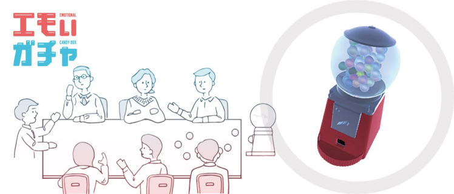
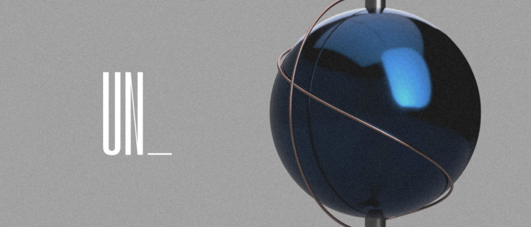
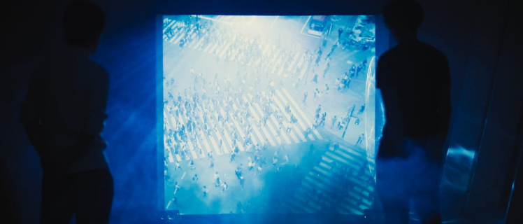

サイバー和菓子
その日の気象データを和菓子で味わおう。気候データ連動型3Dプリント和菓子。
ほしい、をかなえる
ウェブデザイナー
その日の気象データを和菓子で味わおう。気候データ連動型3Dプリント和菓子。

盛り上がりの、倍々ゲーム。音声から感情を解析し、盛り上がりを可視化するガチャ。

UN_は、予定不調和の必要性を探る実験プロジェクト。テクノロジーは「不」を殺すのか。

脳が生み出す、音を聞く、脳波による内発音楽表現。脳の奏でる音楽を聞いてみよう。